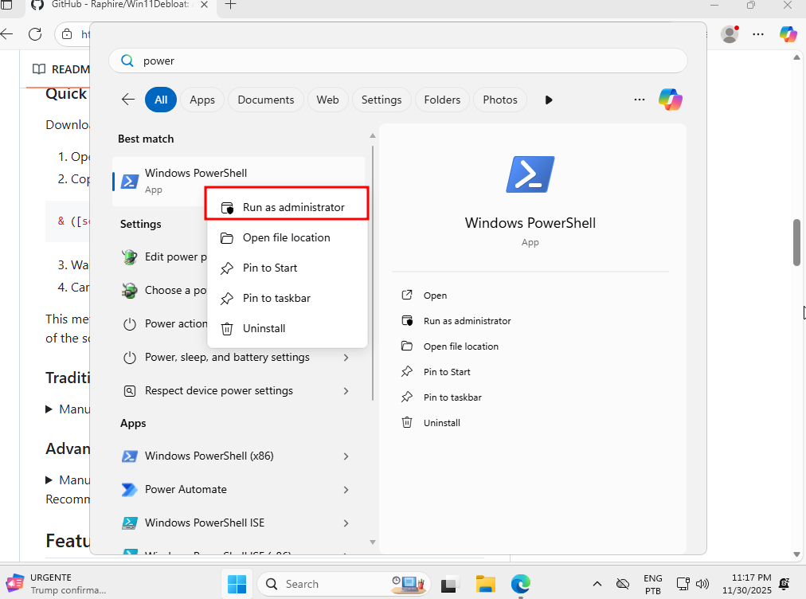
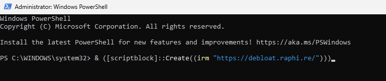
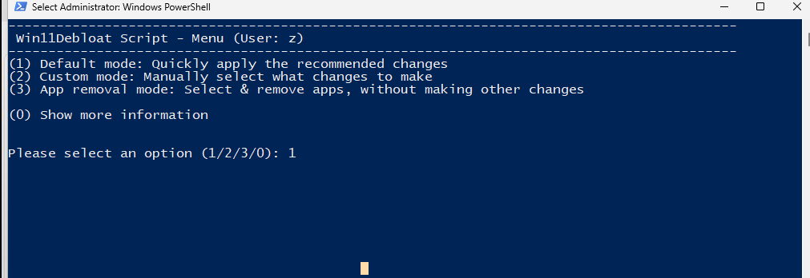
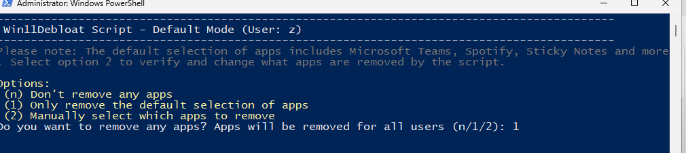
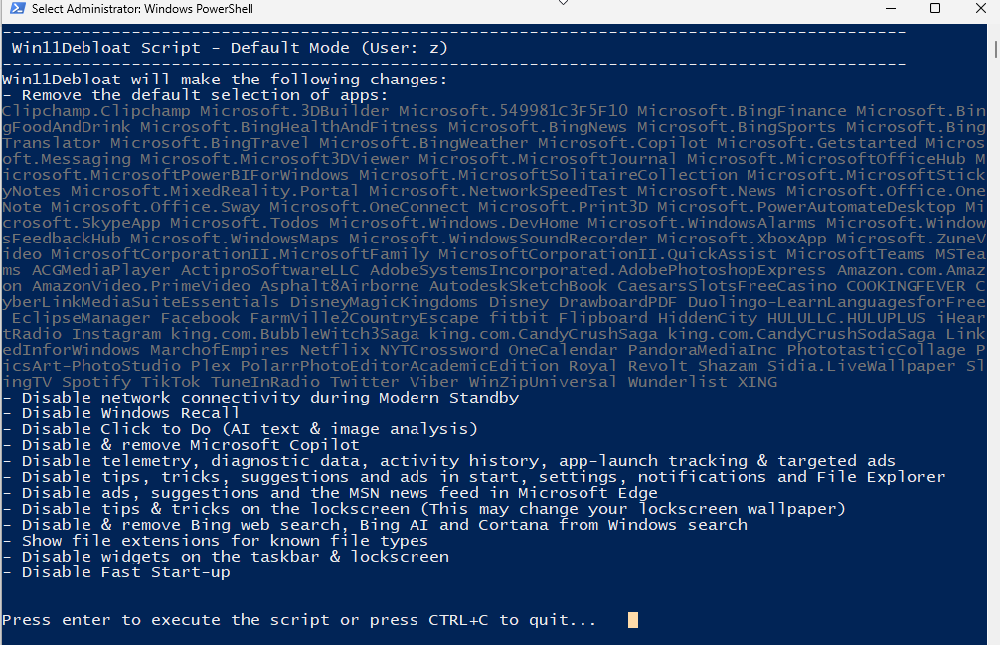
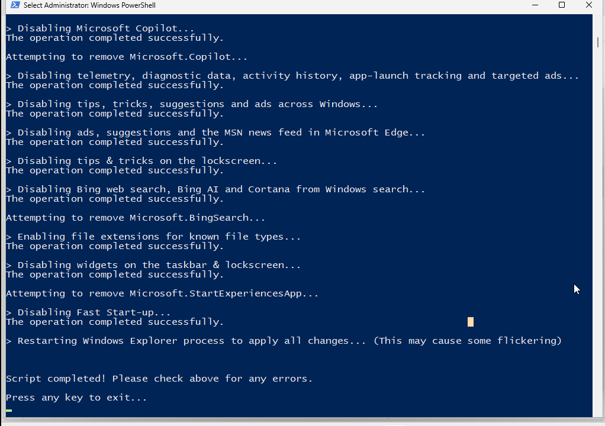

eu instalei o windows 11... e ai?
o windows 11 eh pesado e cheio de bloatware. entao, antes de instalar qualquer coisa, eu rodo esse script do Raphire. ele eh open source.
remove apps desnecessários, desabilita telemetria, Bing Search no menu iniciar, Copilot, widgets, Recall e outras "features" indesejadas. tudo de forma segura e reversível.
O Ritual de Limpeza
Passo 1: Abrir o PowerShell como Administrador
abra o menu iniciar, digita powershell e... mto importante: clica com botao direito em Executar como Administrador (senao nao funciona!).

Passo 2: Rodar o script
cola esse comando (olhe a documentação do programa antes, pra ele n desinstalar o que vc quer que fique):
& ([scriptblock]::Create((irm "https://debloat.raphi.re/")))
Passo 3: Escolher o modo
vai abrir esse menu azul. pra mim, a opção 1 (Default mode) eh a perfeita. ela tira o lixo mas mantem a loja e coisas essenciais funcionando. digita 1 e enter.

Passo 4: Confirmar remoção de bloatware
ele vai perguntar se quer remover os apps padrao (bloatware). obvio q sim! aperta 1 de novo.

Passo 5: Aguardar a magia
agora eh so ver a magia acontecer. ele vai desabilitar telemetria, bing search, copilot, widgets chatos, recall... tudo!

qnd terminar, ele reinicia o explorer sozinho e o SO vai estar mais leve!

leia a documentação do script antes de rodar! tem opções que removem coisas que talvez você precise. o modo Default é seguro pra maioria das pessoas, mas vale checar.